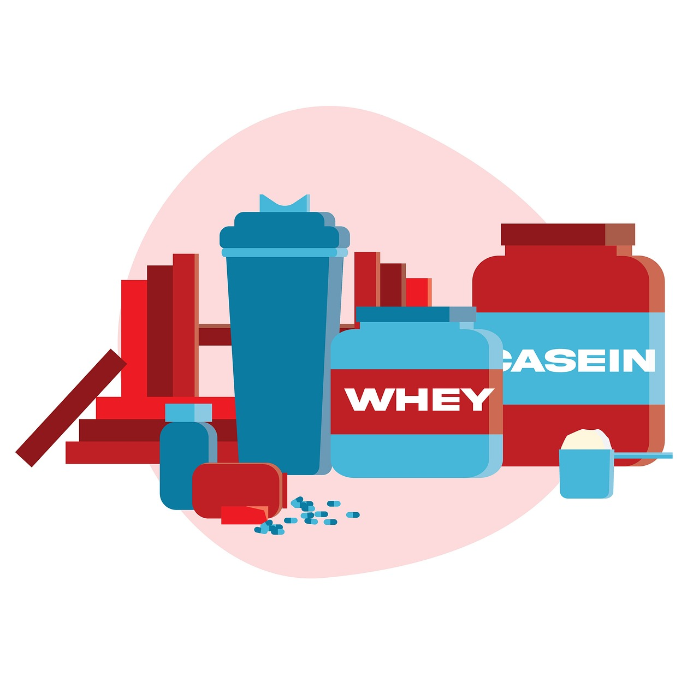
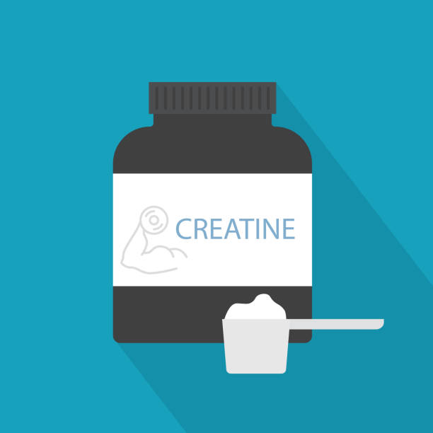

Produtos
Whey Protein

- Proteína de Alta Qualidade: Cada porção do Whey Protein Premium contém uma concentração ideal de proteínas de alta qualidade,
incluindo proteína isolada e concentrada do soro do leite (whey protein), garantindo uma fonte completa de aminoácidos essenciais.
- Recuperação Muscular: O perfil completo de aminoácidos do whey protein ajuda na reparação e recuperação muscular após os treinos.
- Crescimento e Manutenção Muscular: A ingestão adequada de proteínas é crucial para o crescimento e manutenção da massa muscular magra.
- Rápida Absorção: O whey protein é rapidamente digerido e absorvido pelo corpo, fornecendo aminoácidos essenciais de forma rápida para os músculos.
- Preço Promocional: R$ 59,99
Creatina

- Aumento de Energia e Força: A Creatina IronCore aumenta os níveis de fosfocreatina nos músculos, permitindo uma produção de energia mais rápida durante os treinos intensos.
- Recuperação Muscular Acelerada: Ao aumentar a capacidade de regeneração muscular, a creatina auxilia na recuperação pós-treino.
- Aumento da Massa Muscular: A Creatina IronCore pode contribuir para o aumento da massa muscular magra quando combinada com um programa de treinamento de resistência adequado.
- Melhora do Desempenho Esportivo: Este suplemento pode beneficiar atletas em esportes de alta intensidade, como levantamento de peso, corrida de curta distância e esportes que exigem explosões rápidas de energia.
- Preço Promocional: R$ 70,99